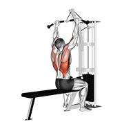
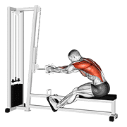
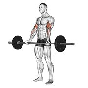
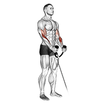
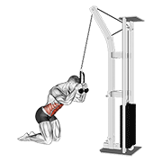

Tirón — Espalda / Bíceps / Romboides
Como el último día hiciste Empuje (pecho + hombro anterior + tríceps), hoy toca Tirón: ningún grupo compite con el trabajo de ayer, así que llegas con recuperación completa. Además vienes con energía alta, así que atacamos los básicos de espalda con carga y dejamos los brazos para cerrar.
3 min bici o remo suave a ritmo ligero · 15 band pull-aparts o rotaciones de hombro para activar romboides · 10 dead hangs de 5-8s en la barra de dominadas (activa dorsal y agarre) · 1 serie ligera de jalón al pecho, 15 reps con poco peso, para sentir la retracción escapular antes de cargar.

Barbell Bent Over Row
Pies a la altura de hombros, inclínate desde la cadera con espalda recta y pecho alto. Agarre prono un poco más ancho que hombros. Tira la barra hacia la parte baja del pecho apretando omóplatos, pausa arriba y baja controlado.
Nota técnica: es el básico de hoy — con energía alta es buen día para subir carga, pero sin perder la espalda recta ni redondear lumbar.

Cable Pulldown
Sentado, rodillas fijas bajo la almohadilla, agarre prono algo más ancho que hombros. Ligera inclinación atrás y core activo. Jala la barra hacia el pecho apretando omóplatos, pausa abajo y sube controlado.
Nota técnica: prioriza el rango completo y la sensación en dorsal sobre el peso — nada de tirar con impulso de cadera.

Cable Seated Row
Sentado con pies en los apoyapiés y rodillas ligeramente flexionadas. Jala las agarraderas hacia el cuerpo apretando omóplatos, pausa y suelta controlado.
Nota técnica: espalda recta todo el recorrido — si te echas hacia atrás para tirar más peso, estás compensando con lumbar.

Dumbbell One Arm Bent-Over Row
De pie, mancuerna en una mano, rodillas semiflexionadas e inclinado desde la cadera. Deja el brazo colgando, tira la mancuerna hacia el pecho manteniendo el codo cerca del cuerpo, pausa arriba y baja controlado. Cambia de lado.
Nota técnica: unilateral para corregir asimetrías entre lados — no gires el torso para ayudarte, el trabajo lo hace la espalda.

Barbell Curl
De pie, agarre supino a la anchura de hombros, codos pegados al torso. Sube contrayendo bíceps, pausa arriba y baja controlado.
Nota técnica: sin balanceo de cadera para ayudarte a subir el peso — si necesitas impulso, baja la carga.

Cable Hammer Curl (con cuerda)
De pie, agarre neutro en la cuerda de la polea baja, brazos superiores fijos. Flexiona contrayendo bíceps, pausa arriba y baja controlado.
Nota técnica: el agarre neutro mete más braquial y antebrazo — cierra bien el bombeo de la sesión.

Cable Kneeling Crunch
De rodillas de espaldas a la polea alta, agarradera de cuerda detrás de la cabeza. Con las caderas quietas, flexiona la cintura llevando el torso hacia los muslos, pausa abajo y sube controlado.
Nota técnica: el movimiento es de la cintura, no de los brazos — no tires de la cuerda con los hombros.
2-3 min: estiramiento de dorsal colgado o en polea baja (30s/lado), estiramiento de bíceps con brazo extendido contra pared (30s/lado), respiración profunda 5 ciclos.